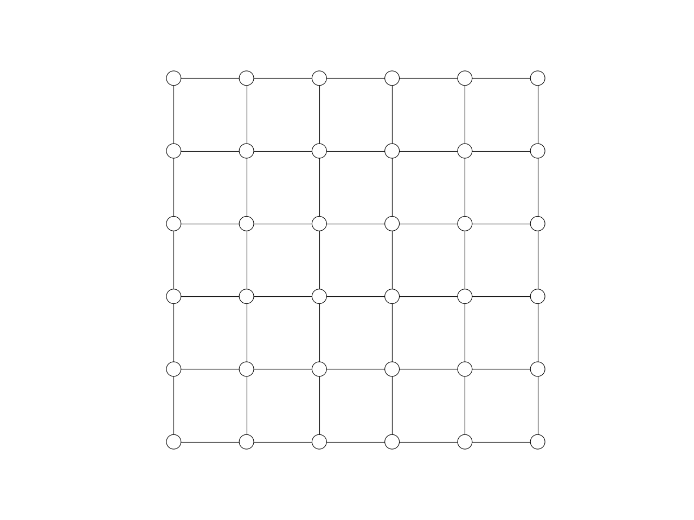
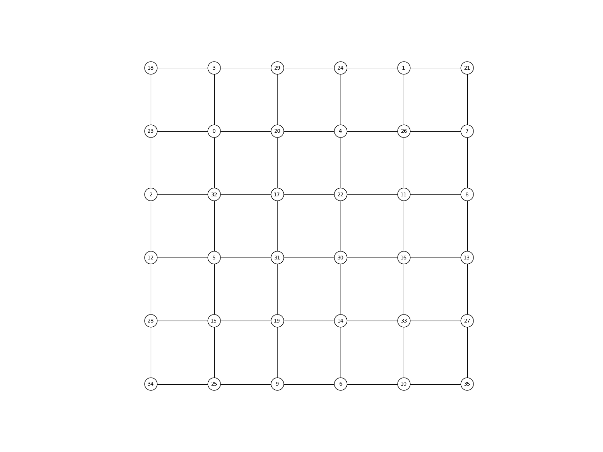
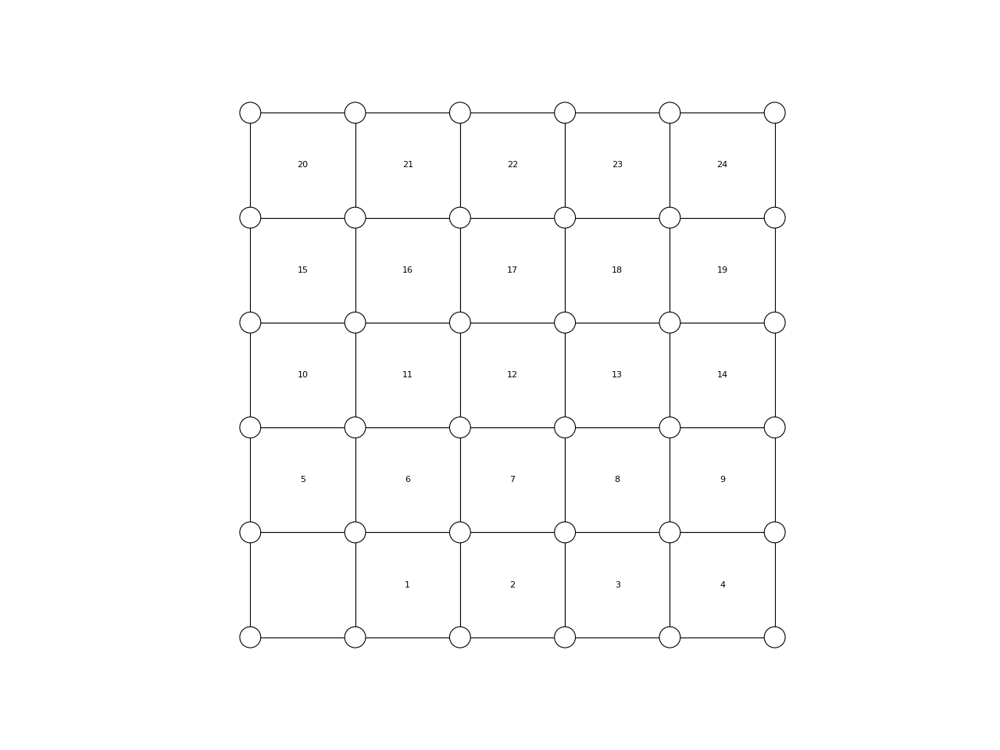

Mesh
-
class
compas.datastructures.Mesh[source] Bases:
compas.datastructures.mixins.fromto.FromToJson,compas.datastructures.mixins.fromto.FromToData,compas.datastructures.mixins.geometry.EdgeGeometry,compas.datastructures.mixins.helpers.FaceHelpers,compas.datastructures.mixins.helpers.EdgeHelpers,compas.datastructures.mixins.helpers.VertexHelpers,compas.datastructures.mixins.mappings.FaceMappings,compas.datastructures.mixins.mappings.EdgeMappings,compas.datastructures.mixins.mappings.VertexMappings,compas.datastructures.mixins.descriptors.VertexCoordinatesDescriptors,compas.datastructures.mixins.attributes.FaceAttributesManagement,compas.datastructures.mixins.attributes.EdgeAttributesManagement,compas.datastructures.mixins.attributes.VertexAttributesManagement,compas.datastructures.DatastructureClass representing a mesh.
The datastructure of the mesh is implemented as a half-edge.
Parameters: - vertices (
listofdict) – Optional. A sequence of vertices to add to the mesh. Each vertex should be a dictionary of vertex attributes. - faces (
listoflist) – Optional. A sequence of faces to add to the mesh. Each face should be a list of vertex keys. - dva (dict) – Optional. A dictionary of default vertex attributes.
- dfa (dict) – Optional. A dictionary of default face attributes.
- dea (dict) – Optional. A dictionary of default edge attributes.
- kwargs (dict) – The remaining named parameters. These are added to the attributes dictionary of the instance.
-
vertex dict – The vertex dictionary. With every key in the dictionary corresponds a dictionary of attributes.
-
face dict – The face dictionary. With every key in the dictionary corresponds a dictionary of half-edges.
-
halfedge dict – The half-edge dictionary. Every key in the dictionary corresponds to a vertex of the mesh. With every key corresponds a dictionary of neighbours pointing to face keys.
-
edge dict – The edge dictionary. Every key in the dictionary corresponds to a vertex. With every key corresponds a dictionary of neighbours pointing to attribute dictionaries.
-
attributes dict – General mesh attributes.
-
facedata Mesh, optional – A
Meshobject for keeping track of face attributes by storing them on dual vertices.
Examples
import compas from compas.datastructures import Mesh from compas.visualization.plotters import MeshPlotter mesh = Mesh.from_obj(compas.get_data('faces.obj')) plotter = MeshPlotter(mesh) plotter.draw_vertices(radius=0.2) plotter.draw_faces() plotter.show()import compas from compas.datastructures import Mesh from compas.visualization.plotters import MeshPlotter mesh = Mesh.from_obj(compas.get_data('faces.obj')) plotter = MeshPlotter(mesh) plotter.draw_vertices(text={key: key for key in mesh.vertices()}, radius=0.2) plotter.draw_faces() plotter.show()import compas from compas.datastructures import Mesh from compas.visualization.plotters import MeshPlotter mesh = Mesh.from_obj(compas.get_data('faces.obj')) plotter = MeshPlotter(mesh) plotter.draw_vertices(radius=0.2) plotter.draw_faces(text={fkey: fkey for fkey in mesh.faces()}) plotter.show()>>> for key in mesh.vertices(): ... print(key) ...>>> for key, attr in mesh.vertices(True): ... print(key, attr) ...Methods
__init__()add_face(vertices[, fkey, attr_dict])Add a face and specify its attributes (optional). add_faces()add_vertex([key, attr_dict])Add a vertex and specify its attributes (optional). clear()clear_edgedict()clear_facedict()clear_halfedgedict()clear_vertexdict()copy()cull_unused_edges()cull_unused_vertices()delete_face(fkey)delete_vertex(key)edge_connected_edges(u, v)edge_coordinates(u, v[, axes])Return the coordinates of the start and end point of an edge. edge_direction(u, v)Return the direction vector of an edge. edge_faces(u, v)edge_label_name(u, v)Get the name of an edge label. edge_length(u, v)Return the length of an edge. edge_midpoint(u, v)Return the location of the midpoint of an edge. edge_name(u, v)Get the name of an edge. edge_point(u, v[, t])Return the location of a point along an edge. edge_vector(u, v)Return the vector of an edge. edges([data])edges_on_boundary()face_adjacency()face_adjacency_edge(f1, f2)face_area(fkey)Return the area of a face. face_center(fkey)Return the location of the center of mass of a face. face_centroid(fkey)Return the location of the centroid of a face. face_coordinates(fkey[, axes])Return the coordinates of the vertices of a face. face_corners(fkey)Return triplets of face vertices forming the corners of the face. face_edges(fkey)Return the edges corresponding to the halfedges of a face. face_halfedges(fkey)Return the halfedges of a face. face_label_name(fkey)Get the name of a face label. face_name(fkey)Get the name of a face. face_neighbourhood(fkey)Return the neighbours of a face across both edges and corners. face_neighbours(fkey)Return the neighbours of a face across its edges. face_normal(fkey[, normalised])Return the normal of a face. face_vertex_ancestor(fkey, key)Return the vertex before the specified vertex in a specific face. face_vertex_descendant(fkey, key)Return the vertex after the specified vertex in a specific face. face_vertex_neighbours(fkey)Return the neighbours of a face across its corners. face_vertices(fkey[, ordered])Return the vertices of the face. faces([data])Return an iterator for the faces and their attributes (optional). faces_on_boundary()Return the faces on the boundary. from_data(data)Construct a datastructure from structured data. from_json(filepath)Construct a datastructure from structured data contained in a json file. from_lines(lines[, boundary_face, precision])from_obj(filepath, \*\*kwargs)Initialise a mesh from the data described in an obj file. from_ply(filepath, \*\*kwargs)from_vertices_and_faces(vertices, faces, ...)Initialise a mesh from a list of vertices and faces. get_any_edge()Get the identifier of a random edge. get_any_face()Get the identifier of a random face. get_any_face_vertex(fkey)Get the identifier of a random vertex of a specific face. get_any_vertex()Get the identifier of a random vertex. get_any_vertices(n[, exclude_leaves])Get a list of identifiers of a random set of n vertices. get_edge_attribute(key, name[, value])Get the value of a named attribute of one edge. get_edge_attributes(key, names[, values])Get the value of a named attribute of one edge. get_edges_attribute(name[, value, keys])Get the value of a named attribute of multiple edges. get_edges_attributes(names[, values, keys])Get the values of multiple named attribute of multiple edges. get_face_attribute(fkey, name[, value])Get the value of a named attribute of one face. get_face_attributes(fkey, names[, values])Get the value of a named attribute of one face. get_faces_attribute(name[, value, fkeys])Get the value of a named attribute of multiple faces. get_faces_attributes(names[, values, fkeys])Get the values of multiple named attribute of multiple faces. get_vertex_attribute(key, name[, value])Get the value of a named attribute of one vertex. get_vertex_attributes(key, names[, values])Get the value of a named attribute of one vertex. get_vertices_attribute(name[, value, keys])Get the value of a named attribute of multiple vertices. get_vertices_attributes(names[, values, keys])Get the values of multiple named attribute of multiple vertices. gkey_key([precision])Returns a dictionary that maps geometric keys of a certain precision to the keys of the corresponding vertices. halfedges()has_edge(u, v[, directed])has_vertex(key)index_key()Returns a dictionary that maps the indices of a vertex list to keys in a vertex dictionary. index_uv()Returns a dictionary that maps edges in a list to the corresponding vertex key pairs. indexed_edges()indexed_face_vertices()insert_vertex(fkey[, key, xyz, return_key])Insert a vertex in the specified face. is_closed()is_connected()Return True if for every two vertices a path exists connecting them. is_edge_naked(u, v)is_manifold()Return True if each edge is incident to only one or two faces, and the faces incident to a vertex form a closed or an open fan. is_orientable()A manifold mesh is orientable if any two adjacent faces have compatible orientation (i.e. is_quadmesh()is_regular()Return True if all faces have the same number of edges, and all vertices have the same degree (i.e. is_trimesh()is_valid()is_vertex_connected(key)is_vertex_extraordinary(key[, mtype])is_vertex_leaf(key)is_vertex_on_boundary(key)is_vertex_orphan(key)key_gkey([precision])Returns a dictionary that maps vertex dictionary keys to the corresponding geometric key up to a certain precision. key_index()Returns a dictionary that maps vertex dictionary keys to the corresponding index in a vertex list or array. leaves()number_of_edges()number_of_faces()number_of_halfedges()number_of_vertices()remove_vertex(key)set_edge_attribute(key, name, value)Set one attribute of one edge. set_edge_attributes(key[, attr_dict])Set multiple attributes of one edge. set_edges_attribute(name, value[, keys])Set one attribute of multiple edges. set_edges_attributes([keys, attr_dict])Set multiple attributes of multiple edges. set_face_attribute(fkey, name, value)Set one attribute of one face. set_face_attributes(fkey[, attr_dict])Set multiple attributes of one face. set_faces_attribute(name, value[, fkeys])Set one attribute of multiple faces. set_faces_attributes([fkeys, attr_dict])Set multiple attributes of multiple faces. set_vertex_attribute(key, name, value)Set one attribute of one vertex. set_vertex_attributes(key[, attr_dict])Set multiple attributes of one vertex. set_vertices_attribute(name, value[, keys])Set one attribute of multiple vertices. set_vertices_attributes([keys, attr_dict])Set multiple attributes of multiple vertices. to_data()Returns a dictionary of structured data representing the data structure. to_json([filepath])Serialise the structured data representing the data structure to json. to_obj(filepath)Write the mesh to an OBJ file. to_vertices_and_faces()Return the vertices and faces of a mesh. update_default_edge_attributes([attr_dict])Update the default edge attributes (this also affects already existing edges). update_default_face_attributes([attr_dict])Update the default face attributes (this also affects already existing faces). update_default_vertex_attributes([attr_dict])Update the default vertex attributes (this also affects already existing vertices). uv_index()Returns a dictionary that maps edge keys (i.e. vertex_area(key)Return the tributary area of a vertex. vertex_connected_edges(key)Return the edges connected to a vertex. vertex_coordinates(key[, axes])Return the coordinates of a vertex. vertex_degree(key)Return the number of neighbours of a vertex. vertex_degree_in(key)Return the numer of incoming neighbours of a vertex. vertex_degree_out(key)Return the number of outgoing neighbours of a vertex. vertex_faces(key[, ordered, include_None])Return the faces connected to a vertex. vertex_label_name(key)Get the name of a vertex label. vertex_laplacian(key)Return the vector from the vertex to the centroid of its 1-ring neighbourhood. vertex_name(key)Get the name of a vertex. vertex_neighbourhood(key[, ring])Return the vertices in the neighbourhood of a vertex. vertex_neighbourhood_centroid(key)vertex_neighbours(key[, ordered])Return the neighbours of a vertex. vertex_neighbours_in(key)Return the incoming neighbours of a vertex. vertex_neighbours_out(key)Return the outgoing neighbours of a vertex. vertex_normal(key)Return the normal vector at the vertex as the weighted average of the normals of the neighbouring faces. vertices([data])Return an iterator for the vertices and their attributes (optional). vertices_on_boundary([ordered])Return the vertices on the boundary. wireframe()Attributes
dataReturn a data dict of this data structure for serialisation. namestr– The name of the data structure.xlist – The X coordinates of the vertices. xylist – The XY coordinates of the vertices. xyzlist – The XYZ coordinates of the vertices. ylist – The Y coordinates of the vertices. zlist – The Z coordinates of the vertices. - vertices (